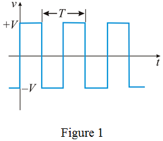

The symmetrical square-wave voltage signal is shown in Figure 1.

The symmetrical square wave and sine wave provides same power.
…… (1)
The sine wave signal peak amplitude is
Let us consider the square wave signal peak amplitude is .
Calculate the sine wave power delivered to R.
Calculate the square wave power delivered to R.
Substitute for in equation-(1)
Therefore, from the result, it is conclude that both waveforms are independent of frequency.